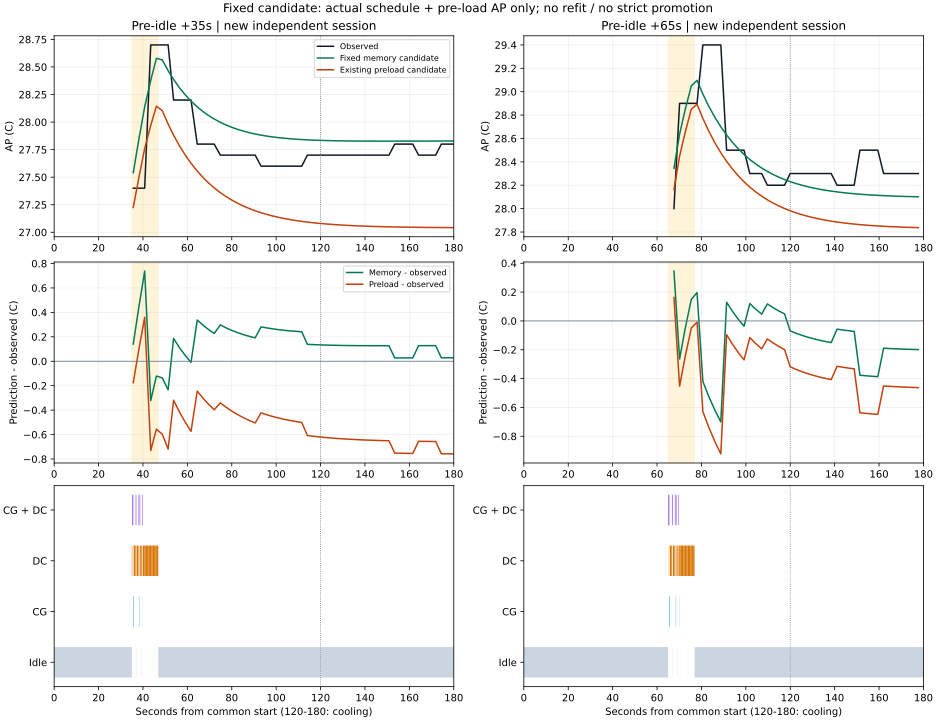
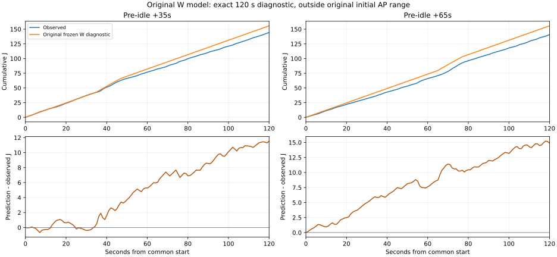

2026-10-02 · completed_descriptive_only · 추가 적합0 · 추론64 · ADB1,698 · 581.797초
| 부하 허용 | 새 후보 MAE °C | 기존 preload MAE °C | 새 후보 최대오차 °C | 최고온도 부호오차 °C |
|---|---|---|---|---|
| +35초 | 0.179 | 0.545 | 0.737 | -0.121 |
| +65초 | 0.190 | 0.370 | 0.701 | -0.303 |
AP 비교창: +35초 조건 35.631–179.801초(56표본), +65초 조건 67.616–177.656초(43표본). 빈 앞부분을 0으로 채우지 않았습니다. 노란 음영은 첫 dispatch부터 마지막 lane 해제까지이며 실제 병행과 같지 않습니다.

+35초 조건 후기 150–175초: 관측 +0.100°C, 후보 +0.001°C. 평균오차 감소가 후기 반응 크기 해결을 뜻하지 않습니다. 두 조건의 평가 길이·초기조건 차이로 MAE 간 차이를 인과 효과로 해석하지 않습니다.

시작 AP27.4/27.9°C는 원래32.5–34.0°C 밖입니다. 에너지 진단 차이 +11.536/+14.880J이며 AP 후보 보완과 별개입니다. 전류 raw=mA 해석은 조건부이고 절대 J 정확도는 인증되지 않았습니다. 현재 APK로의 전이·짧은 상태 전환·일반 동적 정책 비용은 자동 검증되지 않습니다.